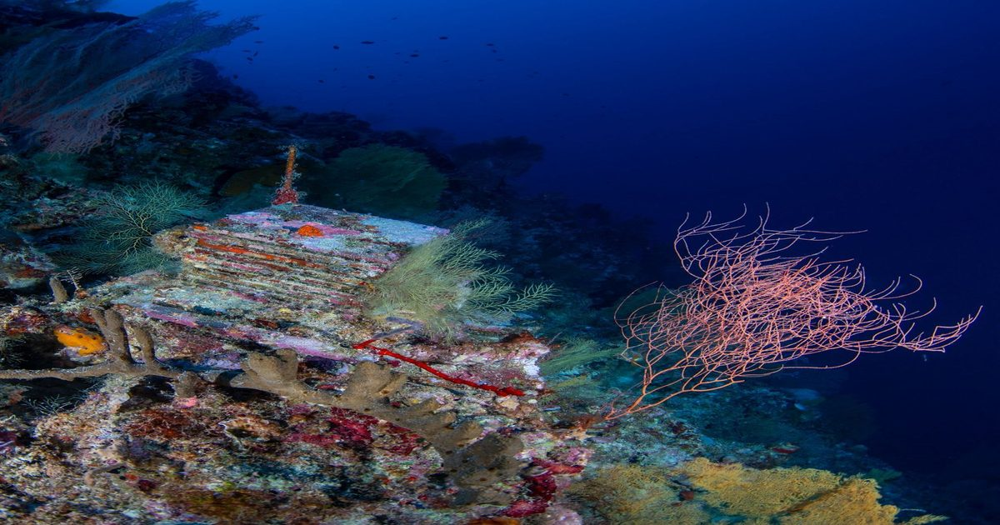

Десятилетний эксперимент раскрывает тайны «глубоких рифов» океана
Ученые оставили сооружения на глубине до 100 метров под поверхностью.
Вот что они обнаружили, когда забрали их 10 лет спустя.

Ученые оставили сооружения на глубине до 100 метров под поверхностью.
Вот что они обнаружили, когда забрали их 10 лет спустя.